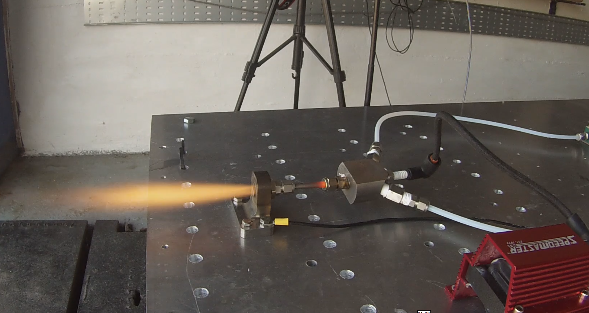
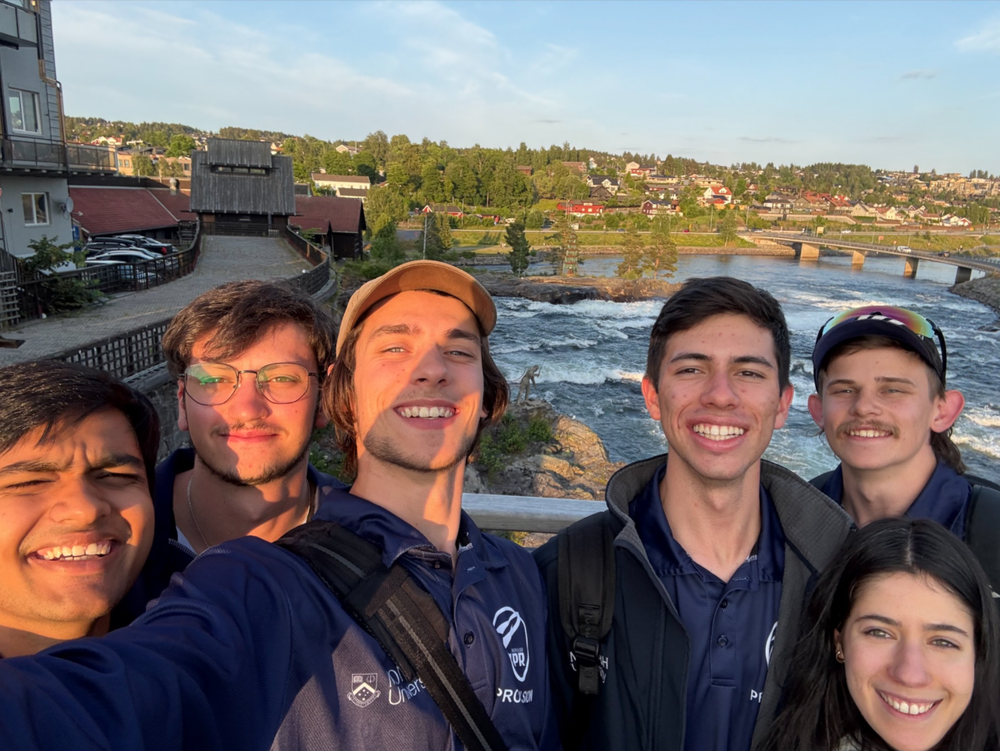

Role
- Leading oxidiser system design and integration for a higher-performance hybrid rocket platform.
- Defining thrust control, feed system safety and staging support for launch-ready architecture.
- Collaborating with propulsion, avionics and launch teams to align development with flight objectives.
Technical focus
Oxidiser systems
Advanced pressure control, feed plumbing and pneumatic safety design for N2O handling.
Thrust management
Engine control logic and valve architecture to improve combustion stability and performance.
Launch support
Ground support design and test planning for mission-ready integration and pre-flight checks.
Process & visuals
Explore
Refined the hybrid architecture with a water-cooled nozzle, post-combustion chamber and robust oxidiser feed layout.

Iterate
Developed a torch ignitor and fuel/oxidiser mixing hardware to support reliable combustion during early tests.

Plan
Built a programme plan around reliability, reusability and the project’s Race 2 Space validation goals.
Media gallery


Project story
Set goals
Defined the vehicle to be flight-capable with a focus on reliability, serviceability and testable performance.
Execute
Built combustion hardware, cooling systems and feed paths to explore real-world performance against mission targets.
Learn
Captured early test learnings on chamber pressure, supply flow, O/F ratio and component tolerance refinement.
Current status
- Oxidiser feed design is being refined for improved safety and operational consistency.
- Structural and integration work continues alongside propulsion validation activities.
- Flight readiness planning is advancing through iterative test and review cycles.